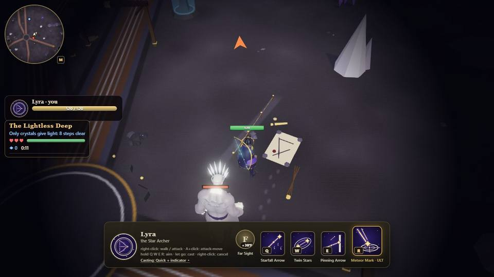
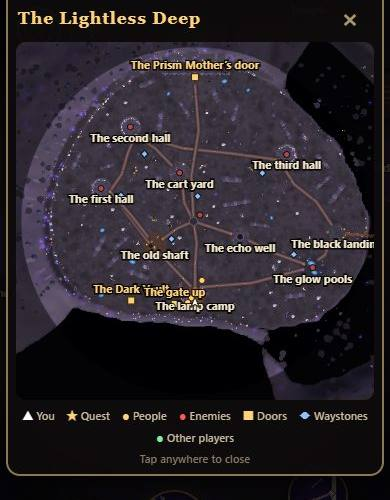
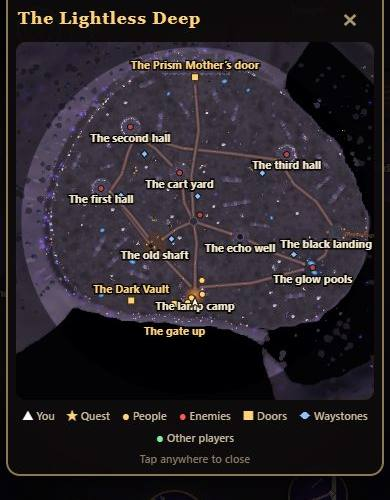

The Climb, floors 31 to 50: one floor at a time
2026-11-16. The user: "make agents that will go slowly through all tower floors and one by one check all things that are done and correct them". This page is the second of the two agents: chapters IV (the Deep) and V (the War). Floors 1 to 30 are on their own page.
How each floor was checked (a dev server of its own, the game page in a hidden browser, time stepped by hand):
- Played through by the route bot (
_worldRoute, pipeline/tools/world-tool.js) as Lyra: every quest taken, done and handed in, the race, every waystone, cache and the lore stone, the trial, the ruler and the gate; any error in the page is counted. - Walked on paper: a flood fill of the floor from the camp (
_worldCheck): every person, pack, quest spot, cache, door and stone must be reachable; and the busiest spot (most enemies within a pack's sight). - Props against the ground as drawn (
climb-props-probe.js): things in the air, light under one side, through cover, on walkable ground and the edge; and anything small standing on a cliff face (climb-grass-probe.js). - Looked at: the camp, every person up close and their card, every pack standing and fighting, the doors and the lore stone, the big map (M), the ruler, the gatekeeper and the trial; the camp, the map and a card on a phone (390 x 844, touch).
- Read: every name and line of the floor against the lore (docs/lore/LORE.md and docs/lore/codex/, the Climb's chapters and The Long Noon).
- Frames: a rough frame time at the camp and in the busiest fight (the machine is shared with other agents: only clear outliers count).
Floor 31 · The Lightless Deep (Chapter IV opens)
Played through: cleared with four stars in 905 s of game time, no lives lost, no errors. All four quests (the Three Crystals, the Pale One, the Lost Lantern, the Survey Lamp), the race with Tempo, six waystones, six caches, the lore stone, the Dark Vault, the Prism Mother and Opaline at the gate: every one done. Reachable: all 43 spots of the floor. Props: nothing new in the air or through cover on walkable ground (the gold keystone 20 m up and the stalactites were looked at in the props pass and left). Frames: about 7 ms at the camp, 9 ms in the busiest fight (five enemies), one spike as the packs woke.





Fixed
- The big map's names covered each other (all floors): by the camp, "The Dark Vault", "The gate up" and "The lamp camp" were written over each other, and on a phone "The black landing" ran off the map's edge. A name now steps a line down or up when it would cover one already written, and stays inside the map (
src/tower/world/map.ts, the shared map: only where names are written changed).





- The Candle-Crowned's greeting was still Isolde's: "Without light I am only a cold woman in a cave", said under a crown of burning candles. Now: "I lost my lantern, and my satchel with it. My candles light my own face and nothing more. Perhaps you can fetch them." (
src/tower/world/folk.ts, floor 31's own line, the way floors 11, 21 and 41 already have theirs.)

Left (in the list for the user)
- The trial room (the Dark Vault) has "VIII" carved on its far wall: the old weekly Tower's height its fight was tuned at, not the floor's number. The title says "Trial of floor 31". The room is the set pieces' code (not mine to change in this round).